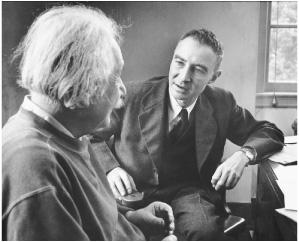

With J. Robert Oppenheimer, 1947
The rush to build the H-Bomb, rising anticommunist fervor, and Senator Joseph McCarthy’s increasingly untethered security investigations unnerved Einstein. The atmosphere reminded him of the rising Nazism and anti-Semitism of the 1930s. “The German calamity of years ago repeats itself,” he lamented to the queen mother of Belgium in early 1951. “People acquiesce without resistance and align themselves with the forces for evil.”1
He tried to maintain a middle ground between those who were reflexively anti-American and those who were reflexively anti-Soviet. On the one hand, he rebuked his collaborator Leopold Infeld, who wanted him to support statements by the World Peace Council, which Einstein rightly suspected was Soviet-influenced. “In my view they are more or less propaganda,” he said. He did the same to a group of Russian students who pressed him to join a protest against what they alleged was America’s use of biological weapons during the Korean War. “You cannot expect me to protest against incidents which possibly, and very probably, have never taken place,” he replied.2
On the other hand, Einstein refrained from signing a petition circulated by Sidney Hook denouncing the perfidy of those who made such charges against America. He was enamored of neither extreme. As he put it, “Every reasonable person must strive to promote moderation and a more objective judgment.”3
In what he presumed would be a quiet effort at promoting such moderation, Einstein wrote a private letter asking that Julius and Ethel Rosenberg, who had been convicted of turning over atomic secrets to the Soviets, be spared the death penalty. He had avoided making any statements about the case, which had divided the nation with a frenzy seldom seen before the advent of the cable-TV age. Instead, he sent the letter to the judge, Irving Kaufman, with a promise not to publicize it. Einstein did not contend that the Rosenbergs were innocent. He merely argued that a death penalty was too harsh in a case where the facts were murky and the outcome was driven more by popular hysteria than objectivity.4
In a reflection of the tenor of the time, Judge Kaufman took the private letter and turned it over to the FBI. Not only was it put into Einstein’s file, but it was investigated to see if it could be construed as disloyalty. After three months, a report was sent to Hoover saying no further incriminating evidence had been found, but the letter remained in the file.5
When Judge Kaufman went ahead and imposed a death penalty, Einstein wrote to President Harry Truman, who was about to leave office, to ask him to commute the sentence. He drafted the letter first in German and then in English on the back of a piece of scrap paper that he had filled with a variety of equations that apparently, given how they trail off, led to nothing.6 Truman bucked the decision to incoming President Eisenhower, who allowed the executions to proceed.
Einstein’s letter to Truman was released publicly, and the New York Times ran a front-page story headlined “Einstein Supports Rosenberg Appeal.”7 More than a hundred angry letters swept in from across the nation. “You need some common sense plus some appreciation for what America has given you,” wrote Marian Rawles of Portsmouth, Virginia. “You place the Jew first and the United States second,” said Charles Williams of White Plains, New York. From Corporal Homer Greene, serving in Korea: “You evidently like to see our GI’s killed. Go to Russia or back where you came from, because I don’t like Americans like you living off this country and making un-American statements.”8
There were not as many positive letters, but Einstein did have a pleasant exchange with the liberal Supreme Court Justice William O. Douglas, who had unsuccessfully tried to stop the executions.“You have struggled so devotedly for the creation of a healthy public opinion in our troubled time,” Einstein wrote in a note of appreciation. Douglas sent back a handwritten reply: “You have paid me a tribute which brightens the burdens of this dark hour—a tribute I will always cherish.”9
Many of the critical letters asked Einstein why he was willing to speak out for the Rosenbergs but not for the nine Jewish doctors whom Stalin had put on trial as part of an alleged Zionist conspiracy to murder Russian leaders. Among those who publicly challenged what they saw as Einstein’s double standard were the publisher of the New York Post and the editor of the New Leader.10
Einstein agreed that the Russian actions should be denounced. “The perversion of justice which manifests itself in all the official trials staged by the Russian government deserves unconditional condemnation,” he wrote. He added that individual appeals to Stalin would probably not do much, but perhaps a joint declaration from a group of scholars would help. So he got together with the chemistry Nobel laureate Harold Urey and others to issue one. “Einstein and Urey Hit Reds’ Anti-Semitism,” the New York Times reported.11 (After Stalin died a few weeks later, the doctors were freed.)
On the other hand, he stressed in scores of letters and statements that Americans should not let the fear of communism cause them to surrender the civil liberties and freedom of thought that they cherished. There were a lot of domestic communists in England, but the people there did not get themselves whipped into a frenzy by internal security investigations, he pointed out. Americans need not either.
Every year, Lord & Taylor department stores gave an award that, especially in the early 1950s, might have seemed unusual. It honored independent thinking, and Einstein, fittingly, won it in 1953 for his “nonconformity” in scientific matters.
Einstein took pride in that trait, which he knew had served him well over the years. “It gives me great pleasure to see the stubbornness of an incorrigible nonconformist warmly acclaimed,” he said in his radio talk accepting the award.
Even though he was being honored for his nonconformity in the field of science, Einstein used the occasion to turn attention to the McCarthy-style investigations. For him, freedom in the realm of thought was linked to freedom in the realm of politics. “To be sure, we are concerned here with nonconformism in a remote field of endeavor,” he said, meaning physics. “No Senatorial committee has as yet felt compelled to tackle the task of combating in this field the dangers that threaten the inner security of the uncritical or intimidated citizen.”12
Listening to his talk was a Brooklyn schoolteacher, William Frauenglass, who had a month earlier been called to testify in Washington before a Senate Internal Security Subcommittee looking into communist influence in high schools. He had refused to talk, and now he wanted Einstein to say whether he had been right.
Einstein crafted a reply and told Frauenglass he could make it public. “The reactionary politicians have managed to instill suspicions of all intellectual efforts,” he wrote. “They are now proceeding to suppress the freedom of teaching.” What should intellectuals do against this evil? “Frankly, I can only see the revolutionary way of non-cooperation in the sense of Gandhi’s,” Einstein declared. “Every intellectual who is called before one of the committees ought to refuse to testify.”13
Einstein’s lifelong comfort in resisting prevailing winds made him serenely stubborn during the McCarthy era. At a time when citizens were asked to name names and testify at inquiries into their loyalty and that of their colleagues, he took a simple approach. He told people not to cooperate.
He felt, as he told Frauenglass, that this should be done based on the free speech guarantees of the First Amendment, rather than the “subterfuge” of invoking the Fifth Amendment’s protection against possible self-incrimination. Standing up for the First Amendment was particularly a duty of intellectuals, he said, because they had a special role in society as preservers of free thought. He was still horrified that most intellectuals in Germany had not risen in resistance when the Nazis came to power.
When his letter to Frauenglass was published, there was an even greater public uproar than had been provoked by his Rosenberg appeal. Editorial writers across the nation pulled out all the stops for their denunciatory chords.
The New York Times: “To employ unnatural and illegal forces of civil disobedience, as Professor Einstein advises, is in this case to attack one evil with another. The situation which Professor Einstein rebels against certainly needs correction, but the answer does not lie in defying the law.”
The Washington Post: “He has put himself in the extremist category by his irresponsible suggestion. He has proved once more that genius in science is no guarantee of sagacity in political affairs.”
The Philadelphia Inquirer: “It is particularly regrettable when a scholar of his attainments, full of honors, should permit himself to be used as an instrument of propaganda by the enemies of the country that has given him such a secure refuge ... Dr. Einstein has come down from the stars to dabble in ideological politics, with lamentable results.”
The Chicago Daily Tribune: “It is always astonishing to find that a man of great intellectual power in some directions is a simpleton or even a jackass in others.”
The Pueblo (Colorado) Star-Journal: “He, of all people, should know better. This country protected him from Hitler.”14
Ordinary citizens wrote as well. “Look in the mirror and see how disgraceful you look without a haircut like a wild man and wear a Russian wool cap like a Bolshevik,” said Sam Epkin of Cleveland. The anticommunist columnist Victor Lasky sent a handwritten screed: “Your most recent blast against the institutions of this great nation finally convinces me that, despite your great scientific knowledge, you are an idiot, a menace to this country.” And George Stringfellow of East Orange, New Jersey, noted incorrectly, “Don’t forget that you left a communist country to come here where you could have freedom. Don’t abuse that freedom sir.”15
Senator McCarthy also issued a denunciation, though it seemed slightly muted due to Einstein’s stature. “Anyone who advises Americans to keep secret information which they have about spies and saboteurs is himself an enemy of America,” he said, not quite aiming directly at Einstein or what he had written.16
This time, however, there were actually more letters in support of Einstein. Among the more amusing ripostes came from his friend Bertrand Russell. “You seem to think that one should always obey the law, however bad,” the philosopher wrote to the New York Times. “I am compelled to suppose that you condemn George Washington and hold that your country ought to return to allegiance to Her Gracious Majesty, Queen Elisabeth II. As a loyal Briton, I of course applaud this view; but I fear it may not win much support in your country.” Einstein wrote Russell a thank-you letter, lamenting, “All the intellectuals in this country, down to the youngest student, have become completely intimidated.”17
Abraham Flexner, now retired from the Institute for Advanced Studies and living on Fifth Avenue, took the opportunity to restore his relationship with Einstein. “I am grateful to you as a native American for your fine letter to Mr. Frauenglass,” he wrote. “American citizens in general will occupy a more dignified position if they absolutely refuse to say a word if questioned about their personal opinions and beliefs.”18
Among the most poignant notes was from Frauenglass’s teenage son, Richard. “In these troubled times, your statement is one that might alter the course of this nation,” he said, which had a bit of truth to it. He noted that he would cherish Einstein’s letter for the rest of his life, then added a P.S.: “My favorite subjects are your favorite too—math and physics. Now I am taking trigonometry.”19
Dozens of dissenters subsequently begged Einstein to intervene on their behalf, but he declined. He had made his point and did not see the need to keep thrusting himself into the fray.
But one person did get through: Albert Shadowitz, a physics professor who had worked as an engineer during the war and helped form a union that was eventually expelled from the labor movement for having communists on its board. Senator McCarthy wanted to show that the union had ties to Moscow and had endangered the defense industry. Shadowitz, who had been a member of the Communist Party, decided to invoke the protections of the First, not the Fifth, Amendment, as Einstein had recommended to Frauenglass.20
Shadowitz was so worried about his plight that he decided to call Einstein for support. But Einstein’s number was unlisted. So he got into his car in northern New Jersey, drove to Princeton, and showed up at Einstein’s house, where he was met by the zealous guardian Dukas. “Do you have an appointment?” she demanded. He admitted he didn’t. “Well, you can’t just come in and speak to Professor Einstein,” she declared. But when he explained his story, she stared at him for a while, then waved him in.
Einstein was wearing his usual attire: a baggy sweatshirt and corduroy trousers. He took Shadowitz upstairs to his study and assured him that his actions were right. He was an intellectual, and it was the special duty of intellectuals to stand up in such cases. “If you take this path then feel free to use my name in any way that you wish,” Einstein generously offered.
Shadowitz was surprised by the blank check, but happy to use it. McCarthy’s chief counsel, Roy Cohn, did the questioning as McCarthy listened during the initial closed hearing. Was he a communist? Shadowitz replied: “I refuse to answer that and I am following the advice of Professor Einstein.” McCarthy suddenly took over the questioning. Did he know Einstein? Not really, Shadowitz answered, but I’ve met him. When the script was replayed in an open hearing, it made the same type of headlines, and provoked the same spurt of mail, as the Frauenglass case had.
Einstein believed he was being a good, rather than a disloyal, citizen. He had read the First Amendment and felt that upholding its spirit was at the core of America’s cherished freedom. One angry critic sent him a copy of a card that contained what he called “The American Creed.” It read, in part, “It is my duty to my country to love it; to support its Constitution; to obey its laws.” Einstein wrote on the edge, “This is precisely what I have done.”21
When the great black scholar W.E.B. Du Bois was indicted on charges stemming from helping to circulate a petition initiated by the World Peace Council, Einstein volunteered to testify as a character witness on his behalf. It represented a union of Einstein’s sentiments on behalf of civil rights and of free speech. When Du Bois’s lawyer informed the court that Einstein would appear, the judge rather quickly decided to dismiss the case.22
Another case hit closer to home: that of J. Robert Oppenheimer. After leading the scientists who developed the atom bomb and then becoming head of the Institute where Einstein still puttered in to work, Oppenheimer remained an adviser to the Atomic Energy Commission and kept his security clearance. By initially opposing the development of the hydrogen bomb, he had turned Edward Teller into an adversary, and he also alienated AEC commissioner Lewis Strauss. Oppenheimer’s wife, Kitty, and his brother, Frank, had been members of the Communist Party before the war, and Oppenheimer himself had associated freely with party members and with scientists whose loyalty came under question.23
All of this prompted an effort in 1953 to strip Oppenheimer of his security clearance. It would have expired soon anyway, and everyone could have allowed the matter to be resolved quietly, but in the heated atmosphere neither Oppenheimer nor his adversaries wanted to back away from what they saw as a matter of principle. So a secret hearing was scheduled in Washington.
One day at the Institute, Einstein ran into Oppenheimer, who was preparing for the hearings. They chatted for a few minutes, and when Oppenheimer got to his car he recounted the conversation to a friend. “Einstein thinks that the attack on me is so outrageous that I should just resign,” he said. Einstein considered Oppenheimer “a fool” for even answering the charges. Having served his country admirably, he had no obligations to subject himself to a “witch hunt.”24
A few days after the secret hearings finally began—in April 1954, just as CBS journalist Edward R. Murrow was taking on Joseph McCarthy and the controversy over security investigations was at its height—they became public through a page-1 exclusive by James Reston of the New York Times.25 The issue of the government’s investigation of Oppenheimer’s loyalty instantly became another polarizing public debate.
Warned that the story was about to break, Abraham Pais went to Mercer Street to make sure that Einstein was prepared for the inevitable press calls. He was bitterly amused when Pais told him that Oppenheimer continued to insist on a hearing rather than simply cutting his ties with the government. “The trouble with Oppenheimer is that he loves a woman who doesn’t love him—the United States government,” Einstein said. All Oppenheimer had to do, Einstein told Pais, was “go to Washington, tell the officials that they were fools, and then go home.”26
Oppenheimer lost. The AEC voted that he was a loyal American but also a security risk and—one day before it would have expired anyway—revoked his clearance. Einstein visited him at the Institute the next day and found him depressed. That evening he told a friend that he did not “understand why Oppenheimer takes the business so seriously.”
When a group of Institute faculty members circulated a petition affirming support for their director, Einstein immediately signed up. Others initially declined, some partly out of fear. This galvanized Einstein. He “put his ‘revolutionary talents’ into action to garner support,” a friend recalled. After a few more meetings, Einstein had helped to convince or shame everyone into signing the statement.27
Lewis Strauss, Oppenheimer’s AEC antagonist, was on the board of the Institute, which worried the faculty. Would he try to get Oppenheimer fired? Einstein wrote his friend Senator Herbert Lehman of New York, another trustee, calling Oppenheimer “by far the most capable Director the Institute has ever had.” Dismissing him, he said, “would arouse the justified indignation of all men of learning.”28 The trustees voted to keep him.
Soon after the Oppenheimer affair, Einstein was visited in Princeton by Adlai Stevenson, the once and future Democratic nominee for president, who was a particular darling among intellectuals. Einstein expressed concern at the way politicians were whipping up fear of communism. Stevenson replied somewhat circumspectly. The Russians were, in fact, a danger. After some more gentle back and forth, Stevenson thanked Einstein for endorsing him in 1952. There was no need for thanks, Einstein replied, as he had done so only because he trusted Eisenhower even less. Stevenson said he found such honesty refreshing, and Einstein decided that he was not quite as pompous as he had originally seemed.29
Einstein’s opposition to McCarthyism arose partly out of his fear of fascism. America’s most dangerous internal threat, he felt, came not from communist subversives but from those who used the fear of communists to trample civil liberties. “America is incomparably less endangered by its own Communists than by the hysterical hunt for the few Communists that are here,” he told the socialist leader Norman Thomas.
Even to people he did not know, Einstein expressed his disgust in unvarnished terms. “We have come a long way toward the establishment of a Fascist regime,” he replied to an eleven-page letter sent to him by a New Yorker he had never met. “The similarity of general conditions here to those in the Germany of 1932 is quite obvious.”30
Some colleagues worried that Einstein’s vocal opinions would cause controversy for the Institute. Such concerns, he joked, made his hair turn gray. Indeed, he took a boyish American glee at his freedom to say whatever he felt. “I have become a kind of enfant terrible in my new homeland due to my inability to keep silent and to swallow everything that happens,” he wrote Queen Mother Elisabeth. “Besides, I believe that older people who have scarcely anything to lose ought to be willing to speak out in behalf of those who are young and are subject to much greater restraint.”31
He even announced, in tones both grave and a bit playful, that he would not have become a professor given the political intimidation that now existed. “If I were a young man again and had to decide how to make a living, I would not try to become a scientist or scholar or teacher,” he intoned to Theodore White of the Reporter magazine. “I would rather choose to be a plumber or a peddler, in the hope of finding that modest degree of independence still available.”32
That earned him an honorary membership card from a plumbers’ union, and it sparked a national debate on academic freedom. Even slightly frivolous remarks made by Einstein carried a lot of momentum.
Einstein was right that academic freedom was under assault, and the damage done to careers was real. For example, David Bohm, a great theoretical physicist who worked with Oppenheimer and Einstein in Princeton and refined certain aspects of quantum mechanics, was called before the House Un-American Activities Committee, pleaded the Fifth Amendment, lost his job, and ended up moving to Brazil.
Nevertheless, Einstein’s remark—and his litany of doom—turned out to be overstated. Despite his impolitic utterances, there was no serious attempt to muzzle him or threaten his job. Even the slapstick FBI efforts to compile a dossier on him did not curtail his free speech. At the end of the Oppenheimer investigation, both he and Einstein were still harbored safely in their haven in Princeton, free to think and speak as they chose. The fact that both men had their loyalty questioned and, at times, their security clearances denied was shameful. But it was not like Nazi Germany, not anything close, despite what Einstein sometimes said.
Einstein and some other refugees tended, understandably, to view McCarthyism as a descent into the black hole of fascism, rather than as one of those ebbs and flows of excess that happen in a democracy. As it turned out, American democracy righted itself, as it always has. McCarthy was relegated to his own disgrace in 1954 by Army lawyers, his Senate colleagues, President Eisenhower, and journalists such as Drew Pearson and Edward R. Murrow. When the transcript of the Oppenheimer case was published, it ended up hurting the reputation of Lewis Strauss and Edward Teller, at least within the academic and scientific establishment, as much as that of Oppenheimer.
Einstein was not used to self-righting political systems. Nor did he fully appreciate how resilient America’s democracy and its nurturing of individual liberty could be. So for a while his disdain deepened. But he was saved from serious despair by his wry detachment and his sense of humor. He was not destined to die a bitter man.